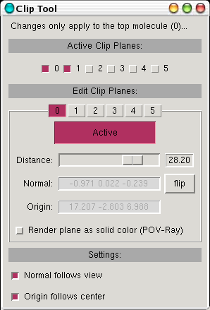

Clipping planes allow for the slicing of a 3D model along a plane. Each molecule can have up to 6 different clipping planes, which can independently be set on or off. The Clip Tool plugin provides an easy-to-use interface for utilizing
some of the clipping plane features provided by VMD 1.8.x.

Using the Clip Tool Plugin
Clipping planes must be independently set and adjusted for each molecule individually. If you wish to use different clipping plane settings on different representations, it is easiest to simply create a separate molecules with these representations. (Note: using the VMD text interface, it is possible to set clipping plane settings for each representation individually; this is not the case for this graphical plugin).
To edit the clipping planes for a given molecule, just make sure to make it the top molecule. All subsequent changes will then apply to that molecule.
Active Clipping Planes
Here you can pick which of the 6 clipping planes will be active.
Edit Clipping Planes
Here, you can edit the properties of each of the 6 clipping planes for the top molecule. Each property only applies to the currently selected plane:
- Active
- Turn the selected clipping plane on or off.
- Distance
- Move the plane back and forth along its normal direction.
- Normal/Origin
- Set the orientation and location of the clipping plane.
- Render as solid color (POV-Ray)
- When rendering the view using the POV-Ray renderer, the intersection of the model and the selected clipping plane can be rendered as a solid color rather instead of being see-through.
Settings
Here, you can select the behavior of the clipping plane that you are currently manipulating:
- Normal follows view
- When checked, the clipping plane will dynamically adjust to be parallel to the screen. This is a good way to easily set the clipping plane orientation. When deselected, the plane normal can be edited numerically by hand.
- Origin follows center
- When checked, the clipping plane origin will automatically be set to the molecule's center (set using the Center mouse mode). When deselected, the plane origin can be edited numerically by hand.